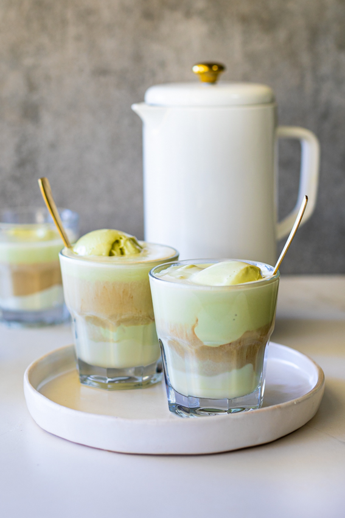
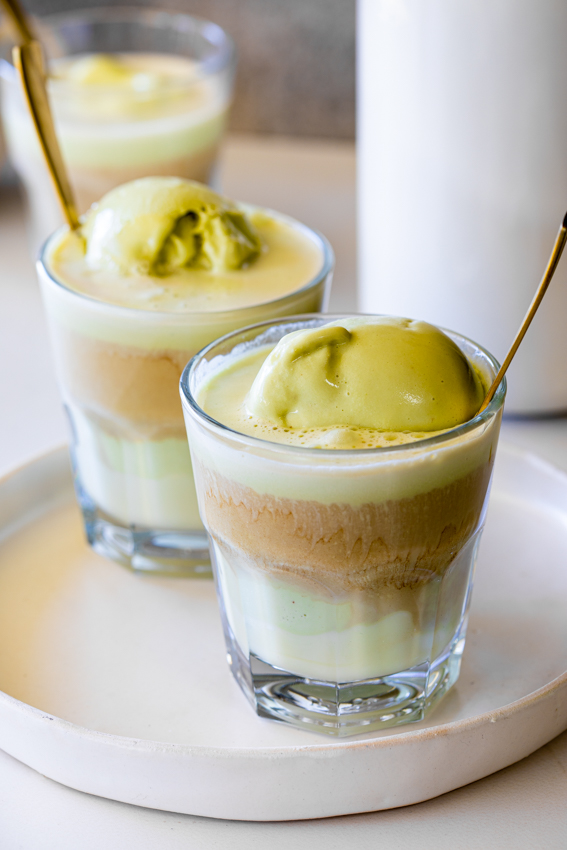

White Chocolate Pistachio Affogato

Description
Affogato
is the perfect fuss-free summer dessert.
Served with white chocolate and pistachio ice cream, it’s a guaranteed crowd pleaser.
What is Affogato?
Affogato is an Italian dessert where vanilla gelato or ice cream is “drowned” in a shot of espresso.
Ingredients
- Pistachio ice cream.
- Feel free to use any flavor of ice cream you like.
- White chocolate.
- Coffee.
- I used French press coffee but any coffee will work.

How to make Affogato
- Make the coffee:
I used French press coffee but espresso is more traditionally used.
While the coffee is brewing, melt the white chocolate in the microwave for 30-60 seconds until smooth.
- Assemble and serve:
Place two scoops of ice cream into heat-proof glasses then drizzle over a tablespoon of melted white chocolate.
Pour over the hot coffee. Serve immediately.